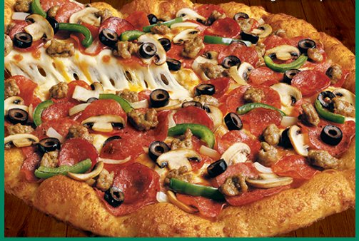

Pizza Recipe

Description
A Legendary Combination - Pepperoni, Italian sausage, salami, linguica, mushrooms, green peppers, onions, black olives on zesty red sauce
Ingredients
- 2 cups (454g) water, lukewarm
- 1 tablespoon (11g) granulated sugar
- 1 tablespoon (9g) active dry yeast or instant yeast, or 1 packet active dry yeast
- 1 tablespoon (18g) salt
- 2 tablespoons (25g) olive oil, optional
- 5 1/2 to 6 cups (660g to 720g) King Arthur Unbleached All-Purpose Flour or King Arthur Pizza Flour Blend, enough to make a soft, smooth dough
- 2 tablespoons (12g) King Arthur Pizza Dough Flavor, optional
Steps
- Dissolve the sugar, yeast, and salt in the lukewarm water (and olive oil, if you're using it)
- Add the flour and Pizza Dough Flavor, starting with 5 1/2 cups (660g) flour and adding more as necessary to make a soft, smooth dough
- Knead the dough (with your hands, a mixer, or your bread machine set on the dough cycle) until it's smooth and elastic, about 7 to 10 minutes
- Place the dough in a lightly greased bowl or other container, cover it, and let it rise for 1 to 2 hours, whatever fits your schedule